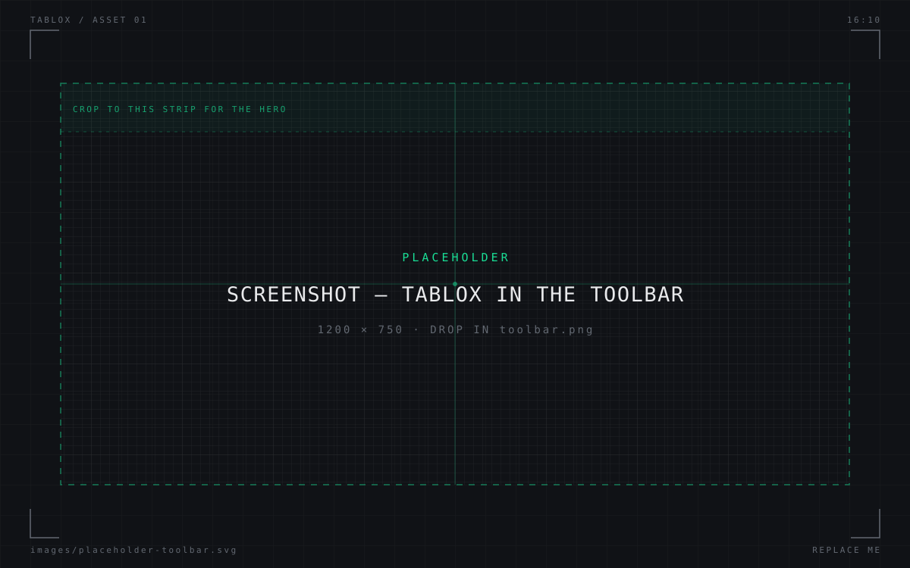
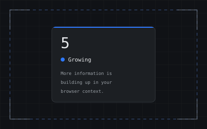
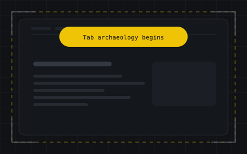
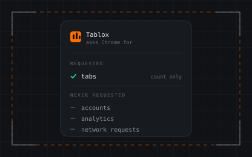

Tablox
Too many tabs?
Your browser may need a checkup.
You opened one tab.
Then another.
Then somehow you’re researching 14 unrelated things and keeping them all “for later.”
Tablox helps you notice when your browser is getting crowded.
01 — The Tablox checkup
Five states. One glance.
Tablox counts your open tabs and paints its icon in the colour for the current state. The badge is the exact count. Move the dial to see it work.
7–9 · Crowded
More information is making it harder to quickly find what you need.
in-page toast Tab archaeology begins
7
Crowded
More information is making it harder to quickly find what you need.
- 1–3 Focused No tab hoarding detected.
- 4–6 Growing The collection has begun.
- 7–9 Crowded Tab archaeology begins.
- 10–12 Fragmented Multiple contexts detected.
- 13+ Overloaded This is no longer a browser.It’s a database.
02 — What’s going on?
Tabs aren’t just websites.
They become reminders, unfinished tasks, research trails, and things you might need later.
That’s useful.
Until you can’t remember why half of them are open.
Tablox gives you a simple visual signal based on your browser activity, so you can notice accumulation before it becomes invisible clutter.
It doesn’t
- Diagnose you.
- Measure your cognitive load.
- Tell you how many tabs you’re allowed to have.
It does
Make the invisible visible.

03 — A little science
Research on browser use suggests people often keep tabs open as external memory, reminders, and containers for unfinished work.
But there’s no magic number where tabs suddenly become “bad.”
Six tabs can be fine.
It depends on what you’re doing.
Twenty can be fine.
Tablox is a behavioral signal, not a brain scanner.



04 — Close tabs?
Maybe.
Or don’t.
That’s the point.
Tablox isn’t here to optimize you.
It’s here to make you notice.